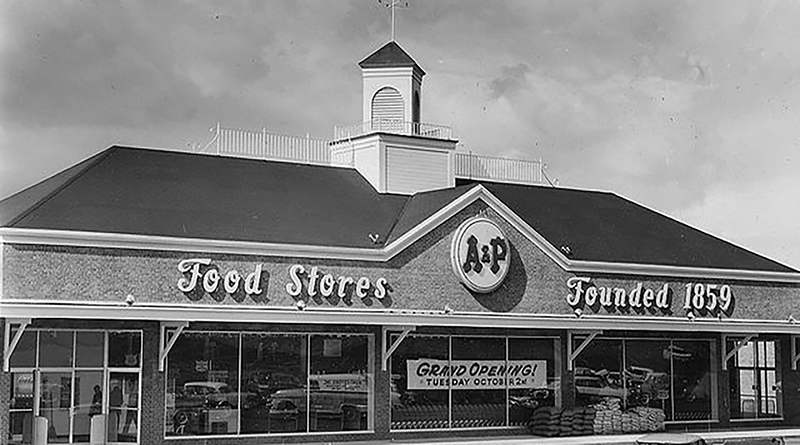
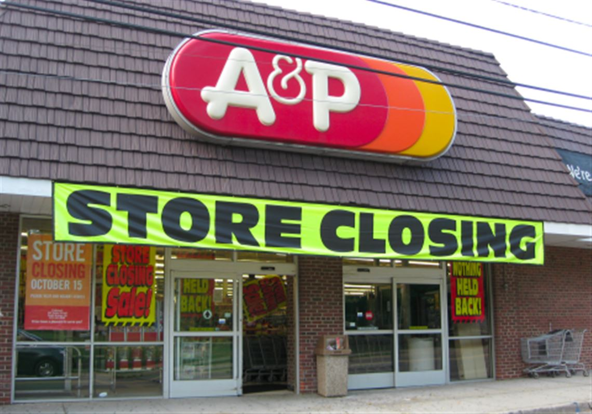

I was a Senior Graphic Designer who was the top assistant to the Production Manager and Creative Director on the production side of things. My job was to create and correct "print" circulars (and more) that promoted store sales on a weekly basis under tight deadlines. Fully armed, I managed a group of ten Artists when that time was needed and would report in to the Production Manager and Creative Director as it would keep them in the loop.
 I also met with other stakeholders in other departments, spoke to printers and distributors when needed, trained staff and prepared documents for release when that time came. I also designed and corrected circular pages, ROP’s, bagstuffers, signage and even had some time for lunch when I wasn’t proofreading. It is important to note that the Supermarkets Waldbaum's and Superfresh were part of the A&P Family too which I had a handle on as well doing the same responsibilities.
In the last year there before going out of business in 2015, I took on the role of Production Manager. So it's pretty cool for me to live with the fact that I was the last Production Manager A&P ever had, dating back to 1859 when this proud company began. (1859-2015)
A mention from Cheryl Lucania, Production Manager at A&P Corporate Offices:
"Bill was task oriented with strong attention to detail."